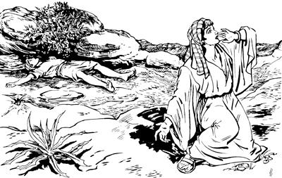

Ishak mangaro aogha (21:1-7)
21
1 Wamekti Nuni Allahri samenag lebogne sembe o'ona aro Sara sembe seneraglamog. 2 Seneraglamogpa Abraham neneko sabal taog aghana, Allahri seneropneag agha elkel Sara me monag taogpa Allahri, “Sumene sum mangaro alul,” seogne sunsunum taog sumeneko me nengabo me mangaro aog. 3 Mangaro aogpa, Abraham nenekori me si Ishaka engkaog. 4 Engkaogti Ishak neneko mangaro aogne ik lin sum taogpa, Allahri lebogne sunsunum uro Abrahamdi kon karebaog. 5 Abraham neneko mangkaekne hengkun taibuka taubuka ulamogha teng wilindi eptopne supna tarabare (100) taogpa, Ishak mangaro aog. 6 Mangaro aogti Sara nenekori yubu lelamogti, “Allahri nanag ualne sembe ogsolamna. Nimi yog nimiri ka'ebahikti nari ogsolamna saog uro sindi babe ogsobaukang,” alamog. 7 Nen yubu nhon lelamogti, “Nari anam me mangaro an komag nimi etneri nari na'ange ambarelamsengdi, ‘An andi keldi anmabo maum timbahilul,’ aro ambatnep kom. Na'ange ya'ag sabal tao aghana nari me mangkatna,” alamog.Abrahamdi Hagar elme Ismaelap yag lambahiogha (21:8-21)
8 Wamekti Sara elme Ishak nubu talamogti, ilin maum lipsiog sum eneko Abrahamdi sani nubunge yobaog. 9 Yobaogpa Hagar nenekori Abraham mangkarogne Ismael neneko yubu nepto og solamog. Yubu nepto ogsolamogha kembaogti, 10 Sara kel enekori Abrahamag ambarelamogti, “An tebamenba, andinge na name Ishakap, an arukna elmeap sin ngai tarikag, an arukna ilin elme yag lambahilulam,” aro ambarog.
11 “Yag lambahilulam,” seogpa Abraham nenekori, “Ismael babe nari me aghana sa'a sembe lepla?” aro wana mali taog. 12 Wana mali taogpa Allahri Abrahamag yubu lelamogti, “An arukna Hagar elmeap sembe wana ikin sembaheng kom. Nari, ‘Andi nimi yina likto pilulne maikno taukang,’ aro salag pimnonge neneko Ishak siba uro pilul ana Sarari leplange nene saog uro ualulam. 13 Hagar elme babe an mangkatkeonge wamla aro el babe mikip nembaneba, eldi mangaroba mangarobari mangkahyikne maikno taikpa, as nubu nene-nene pihinun,” seog.
14 Wene seogpa mabeka lukun Abraham nenekori kwanengap mag ma'i terobap Hagarag pobirogti, “Anmeap palamturom,” aro ambatsiog. Ambatsiogpa Hagar neneko pirekti, Bersyeba aldesag “Tala pinun,” aro wana eka'uk alamogpa, yang pang ulamog. 15 Yang pang ulamogpa, mag pabiogne abeneko orog taogpa Hagar nenekori elme yoaba nusamag pilobogti, 16 “Name si taraplamlea imnun kom,” aro olog weag pina pukamogti engelamog. 17 Me Ismael nenekori mag yori hain taknep ulamogti, “Na mag,” alamogha Allahri ka'ebaogpa, Allah ilipsae arukna malaikat nenekori imag agha yubu lelamogti, “Hagar, sa'a sembe wana ikin uro wamlam? Allahri anme yubu ka'ebalba, log sembaheng kom! 18 An me peramag pimendi pukitmendi, sae lomoro saelbalulam. Ilisag yabo maikno nembahineba, maikno taikti, as nubunge sopso pukang,” aro ambarog.

19 Ambarogti, “Mag sembe so'o walirobag kembalul,” aro Hagar haing tibin nembaogpa, ibogti mag ma'iag tero tel piogti, elme tarel aogpa teog.20-21 Teogti wamogpa, Allahri Ismael neneko paiamog paghabog nubu taogti, aldesag Paran wamog. Paran wamogpa, ilindi Mesir kel nhon tarogpa, toro aogti yin sae yonge wamog.
Abrahamap Abimelekhap yubu nikne lepteka (21:22-34)
22 Ik nhon sum Abimelekhap, Pikhol yin saleropne sikindoap Abrahamag yubu lelamdekti, “Nuri lag ia ulangkeap. Nia mangkina Allahri yeplangkelne,” serek. 23 Serekti, “Ane sembe nanag nen orolenange leplulam komba, sik uro Allah siag leplulamne, nari mabo sembe babe, nari mangarobari mangkahyikne sembe babe, mog so'o ene sembe babe, nari anag ulamna saog uro, anna sekelananne anekona,” seog.
24 Wene seogpa Abrahamdi, “Yo nangkae, nen orolenange lemnun kom,” seog.
25 Wene seogti Abraham elmaboringe mag waliroba longoropne Abimelekh ilipsabori taulbaekne sembe Abrahamdi, “Yaghe, welaro,” seogpa 26 Abimelekhti, “Na ekon: Etneri uaonge sembe apna samenag ambatneom kom aghana sumene og ka'eban,” seog.
27 Wene seogpa Abraham nenekori eldi pham domba eldi pham sapi tobogti, Abimelekh tarogpa, yubu salag nikne leptek. 28-29 Leptekti Abraham nenekori pham domba me kelne aghabog saekpare poloro nikag pibogha sembe Abimelekhti, “Sa'a sembe neabenena nikag poloro piplam?” seog.
30 Wene seogpa Abrahamdi, “Pham me saekpare abene nari saeri tatkinun. ‘Pham abene kekneba mag ane naba nari saeri wailbano,’ aro an el ua unne sembe tatkinun,” seog.
31 Wene aro salag leptekti, yubu nikne leptek ane sembe mag aneko Bersyeba engkaek.b 32 Yubu Bersyeba aneko nikne leptekti, Abimelekhap yin saleropne sikindo Pikhol ponekoap nen samoro Filistin so'oag pirek. 33 Pirekpa Abraham nenekori kal yangkal saog kal Bersyeba peramag aneko mebogti, “Allah ya'ag kamagne poneko” si lero yoplamog. 34 Abraham neneko ik maiknoro Filistin so'oag aneko wamogti, nimi sekelananne wamog.